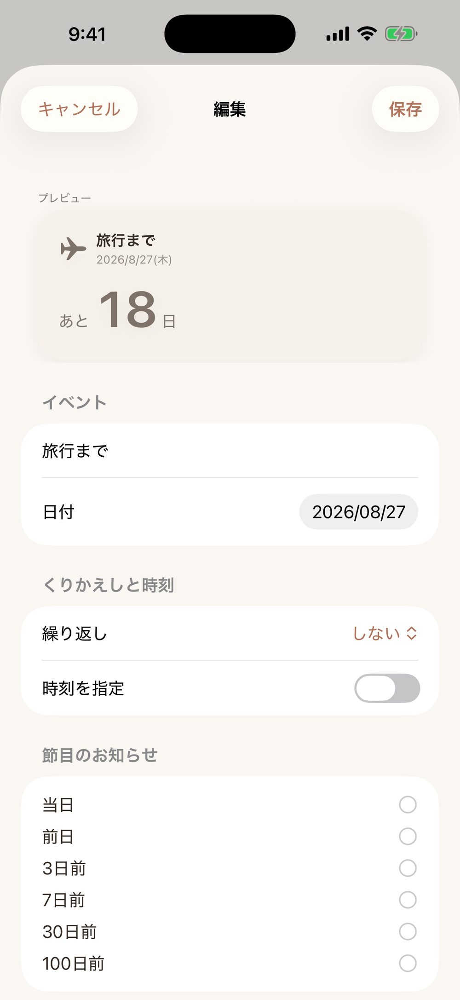
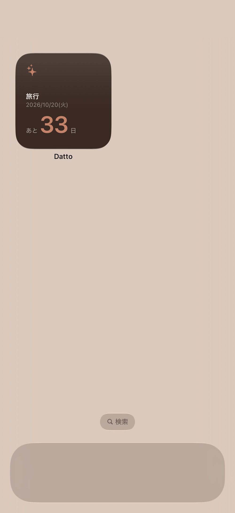

Datto（ダット）は、大切な日までの残り日数をホーム画面のウィジェットに出すカウントダウンです。
試験や提出の締切、誕生日や記念日、旅行や引っ越し——「その日」を登録するのは最初の一度だけ。
試験も、記念日も、旅行も。 ウィジェット1枚と、イベント3件までは無料のままずっと使えます。

繰り返しも、節目のお知らせも。Pro 繰り返しは毎年・毎月、次の年へひとりでに。節目のお知らせは100日前・前日・当日など。音は鳴りません。
色を選んで、その日を登録。 洗練された12色のパレット＋自由なカスタムカラー。文字色は背景に合わせて自動で読みやすく。
アプリを開く習慣は要りません。一度置いておけば、ホーム画面を見るたびに目に入ります。

広告なし・アカウント不要。
買い切り・サブスクリプションではありません。
シンプルに、あなたの「その日まで」を。